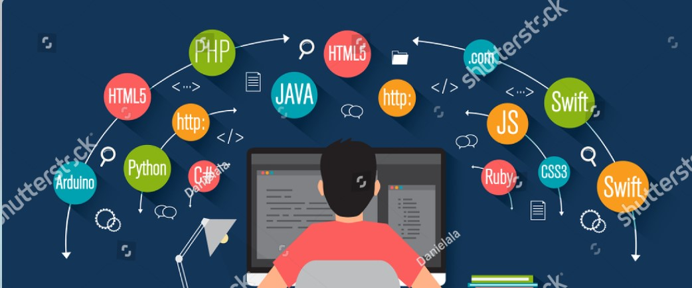

I'm an Electrical Engineer that graduated with Honours, wrote two technical papers one of which got published in a reputed scinetific journal, and was hoping to pursue masters and a doctorate, but here I am 3-years later in one of the worlds largest service based company, wokring in the most sought after unit STG with some of the most talented folks I know. This blog is more of a personal note or diary where I like to document all and anything that peaks my interest. Hope you have as much a good time reading it, as I had in writing it.
Pandas, a powerful data manipulation and analysis library for Python, has become a cornerstone in the toolkit of data scientists, analysts, and engineers. Its versatility and ease of use make it a popular choice for working with structured data. In this article, we will delve into the advantages and disadvantages of Pandas, and explore alternative solutions for large-scale data processing.

In the world of software development, ensuring code quality and consistency is paramount. However, achieving this manually can be time-consuming and prone to errors. This is where pre-commit hooks come into play. Pre-commit hooks are automated scripts or actions that run before each commit, allowing developers to optimize their code and contributions.
In the world of software development, two important concepts, parallelism and concurrency, play a crucial role in optimizing performance and improving responsiveness. While often used interchangeably, these terms have distinct meanings and implications. In this article, we will explore parallelism and concurrency, understand their similarities, and uncover the differences between them, specifically in the context of Python.
If you are looking for a way to transform your data in your warehouse using SQL, dbt(data build tool) might be the best solution for you. dbt is an open-source tool that simplifies data transformation by allowing data analysts and engineers to write SQL statements that it then converts into tables and views, dbt also seamlessly integrates with git and automates documentation and testing, making data transformation fast and reliable.